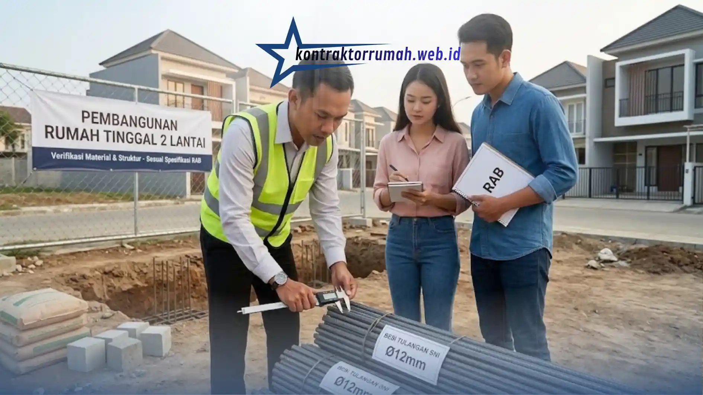

Membangun rumah dua lantai kerap menjadi solusi utama ketika lahan terbatas namun kebutuhan ruang keluarga terus bertambah. Sayangnya, tidak sedikit pemilik rumah yang akhirnya terjebak pembengkakan biaya atau hasil akhir yang jauh dari ekspektasi, hanya karena kurangnya persiapan sebelum peletakan batu pertama. Padahal, dengan perencanaan yang matang, proyek rumah bertingkat bisa berjalan lancar, efisien, dan sesuai anggaran.
Sebelum membongkar rumah lama atau mulai membeli material, ada beberapa langkah krusial yang wajib dipahami terlebih dahulu. Memilih jasa bangun rumah 2 lantai yang tepat, serta memahami alur kerjanya dari awal hingga akhir, akan menyelamatkan Anda dari banyak masalah di kemudian hari, mulai dari keterlambatan pengerjaan hingga kualitas struktur yang meragukan.
Poin Penting
- Tempatkan area publik di lantai dasar dan area privat di lantai atas, lalu tentukan posisi tangga sejak tahap konsep karena bisa memakan ruang efektif 3–4 m².
- Minta RAB transparan per item pekerjaan lengkap dengan spesifikasi material.
- Harga yang terlalu murah bisa jadi sinyal material di bawah standar, misalnya besi tulangan yang tidak sesuai SNI.
- Urus dan pastikan PBG disetujui sebelum proyek berjalan agar terhindar dari penyegelan.
- Pilih kontraktor dengan portofolio bangunan bertingkat dan pahami perbedaan borongan penuh dengan borongan jasa.
Matangkan Konsep dan Denah Ruang Terlebih Dahulu
Sebelum menghubungi kontraktor, pastikan Anda sudah memiliki gambaran jelas tentang pembagian ruang di lantai satu dan dua. Pola umum yang efisien adalah menempatkan area publik—ruang tamu, ruang keluarga, dan dapur—di lantai dasar, sementara area privat seperti kamar tidur diletakkan di lantai atas. Pertimbangkan juga arah cahaya matahari dan sirkulasi udara agar rumah tetap nyaman tanpa terlalu bergantung pada pendingin ruangan.
Selain itu, pikirkan posisi tangga sejak tahap konsep. Tangga yang salah tempat bisa memakan ruang efektif hingga 3–4 m² yang sebenarnya bisa dimanfaatkan untuk fungsi lain. Banyak arsitek menyarankan tangga diletakkan dekat pintu masuk atau di sudut rumah agar tidak memotong alur sirkulasi ruang utama.
Hitung Rencana Anggaran Biaya (RAB) Secara Realistis
Mintalah rincian RAB yang transparan dari pihak pemborong, lengkap dengan spesifikasi material yang digunakan. Jangan mudah tergiur harga murah tanpa mengecek standar keamanan bangunan bertingkat, karena rumah dua lantai membutuhkan struktur pondasi dan rangka yang lebih kuat dibanding rumah satu lantai.
Selisih harga yang terlalu jauh dari standar pasar biasanya menjadi sinyal adanya pengurangan kualitas material, misalnya penggunaan besi tulangan berdiameter lebih kecil dari standar SNI atau campuran beton yang tidak sesuai takaran.

Memeriksa besi tulangan langsung bersama kontraktor membantu memastikan material sesuai spesifikasi dalam RAB.
Sebagai gambaran umum, biaya bangun rumah 2 lantai biasanya dihitung per meter persegi luas bangunan, dengan kisaran yang bervariasi tergantung spesifikasi (kelas standar, menengah, atau premium) dan lokasi proyek. Selalu minta rincian per item pekerjaan—struktur, arsitektur, serta mekanikal dan elektrikal—agar Anda tahu persis ke mana anggaran dialokasikan.
Urus Legalitas dan PBG Sejak Awal
Bangunan dua lantai memiliki syarat konstruksi dan tata kota yang lebih ketat dibanding rumah satu lantai. Pastikan izin Persetujuan Bangunan Gedung (PBG) sudah diurus dan disetujui sebelum proyek mulai berjalan, agar tidak terjadi penyegelan atau masalah hukum di tengah proses pembangunan.
Proses ini memang memakan waktu, tetapi jauh lebih aman dibanding harus menghentikan proyek di tengah jalan, yang justru menambah biaya akibat material menganggur dan tukang yang harus dibayar meski tidak bekerja.
Cek Rekam Jejak dan Portofolio Kontraktor
Pastikan Anda bekerja sama dengan tim yang memiliki portofolio nyata dalam mengerjakan bangunan bertingkat. Kunjungi salah satu proyek yang pernah mereka kerjakan jika memungkinkan, atau minta testimoni langsung dari klien sebelumnya. Kontraktor berpengalaman biasanya juga bisa memberikan simulasi struktur untuk memastikan bangunan bebas dari risiko retak struktural di kemudian hari.
Perhatikan juga sistem kontrak kerja yang ditawarkan. Ada dua model umum: borongan penuh (material dan jasa ditanggung kontraktor) atau borongan jasa saja (Anda menyediakan material sendiri). Masing-masing punya kelebihan: borongan penuh lebih praktis dan minim risiko kekurangan material, sementara borongan jasa memberi kontrol lebih besar atas kualitas dan merek material yang digunakan.
| Aspek | Borongan Penuh | Borongan Jasa |
|---|---|---|
| Penyedia material | Kontraktor (material dan jasa) | Pemilik rumah |
| Kelebihan utama | Lebih praktis dan minim risiko kekurangan material | Kontrol lebih besar atas kualitas dan merek material |
FAQ Seputar Jasa Bangun Rumah 2 Lantai
Dengan memahami keempat langkah di atas—konsep dan denah, RAB, PBG, serta rekam jejak kontraktor—Anda punya dasar yang kuat untuk memulai proyek rumah dua lantai tanpa kejutan biaya di tengah jalan. Butuh referensi cara menilai mitra pembangunan? Baca juga panduan memilih jasa kontraktor rumah terpercaya.